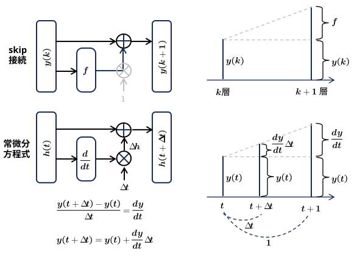

残差ネットワークと常微分方程式

ニューラルネットワークの層の概念を「離散」から「連続」へと拡張し、隠れ状態のダイナミクスを常微分方程式（ODE）として定式化した深層学習フレームワーク。
従来のネットワークでは、あらかじめ定義された層の数だけ順伝播（Forward）の計算を行うが、Neural ODEでは数値微分方程式ソルバー（ODE Solver）（ルンゲ＝クッタ法など）に計算を丸投げする。
-
・順伝播（予測）
初期値（入力データ） \(y(t_0)\) から、ODEソルバーを使って指定の時刻 \(t_1\) までの微分方程式を解き、最終的な出力 \(y(t_1)\) を得ます。
-
・逆伝播（学習）:
パラメータ θ の更新には、Adjoint法（随伴変数法） という数学的アプローチが使われます。これにより、途中の計算過程（グラフ）をすべてメモリに保存しておく必要がなくなり、メモリ消費量を劇的に抑えて（ O(1) のメモリ効率） 学習を進めることができます。